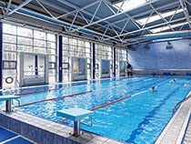

Хобби
У меня есть хобби это плавание. Я хожу в басейн Нептун
У каждого человека есть свое хобби. Кто-то поет, кто-то играет на музыкальном инструменте, а кто-то любит делать
что-нибудь своими руками. Но я - очень разносторонний человек и мне нравятся разные вещи.
Я люблю видео на Ютубе. Я смотрю многих блогеров, мне это нравится, потому что они такие же, как и я. Блогеры
говорят о том, что интересно мне, я вижу много разных развлечений и дел, которые я могу повторить.
Еще я люблю плавать в бассейне
Благодаря видео на Ютубе я отдыхаю от учебы и остальных дел
Одно из моих хобби


Я посещаю бассейн там я плаваю
На первой тренировке я поставила цель тренеру: перестать бояться и научиться плавать. Как показала практика это нельзя объединить. Страх в той или иной мере останется, его можно только начать контролировать. Ну и уверенность в своих силах тоже помогает его преодолеть. Сейчас я понимаю, мои посещения бассейна надолго и я в самом начале пути. Но постепенно, очень медленно я преодолеваю себя.
У меня есть хобби это плавание. Я хожу в басейн Нептун